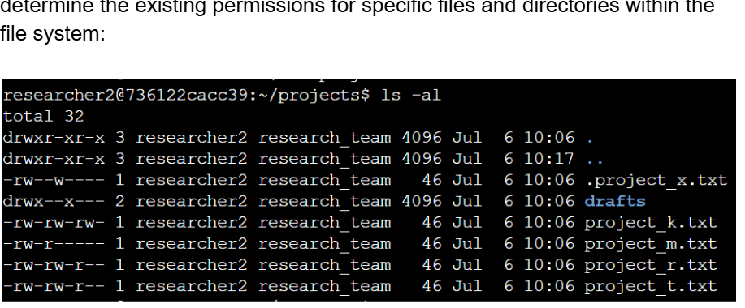
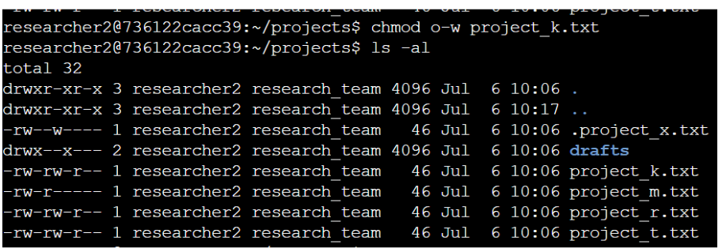
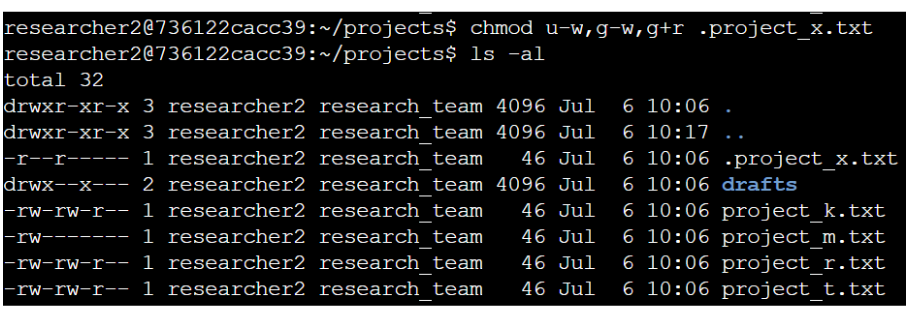
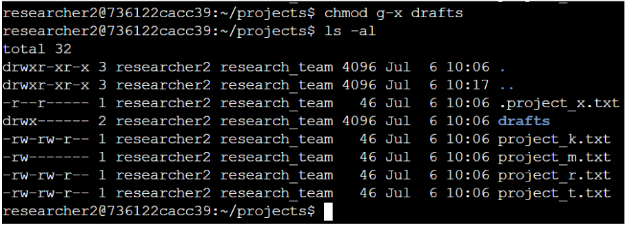

Project description
The research team at my organization needed to update the permissions for specific files and directories within the projects directory. The existing permissions did not reflect the appropriate authorization levels, which could create potential security risks. To help maintain a secure system and ensure that users had only the necessary access, I reviewed and updated the file and directory permissions.
Check file and directory details
I used ls -al to view a detailed listing of all files and directories within the projects directory, including hidden files.

The output showed one directory named drafts, one hidden file named .project_x.txt, and four additional project files. The 10-character string at the beginning of each entry represents the file type and the permissions assigned to it.
Describe the permissions string
Linux file permissions are represented by a 10-character string. The first character identifies the file type: d indicates a directory, while - indicates a regular file. The remaining nine characters are divided into three groups that define permissions for the user, group, and other users — each group containing read (r), write (w), and execute (x) permissions.
For example, the permissions for project_t.txt are -rw-rw-r--: a regular file where the user and group have read/write access, and other users have read-only access.
Change file permissions
The organization determined that other should not have write access to any project files. After reviewing permissions, I identified that project_k.txt granted write access to other, and removed it.

Change file permissions on a hidden file
The .project_x.txt file had been archived and was no longer actively used. Write access needed to be removed for all categories, while user and group retained read access. I used u-w, g-w, and g+r to apply the correct permissions.

Change directory permissions
Only the researcher2 user was authorized to access the drafts directory. I identified that group still had execute permission, and removed it with chmod g-x drafts to enforce the access restriction.

Summary
In this activity, I reviewed and updated file and directory permissions within the projects directory to align them with the organization's authorization requirements. I used ls -la to examine existing permissions, identified those that did not meet the required access controls, and used chmod to correct them — removing unnecessary write permissions, granting required read access, and restricting access to the drafts directory. After each modification, I verified the updated permissions to confirm the changes had been applied correctly. This activity reinforced the importance of applying the principle of least privilege and regularly reviewing access permissions to help protect organizational resources.